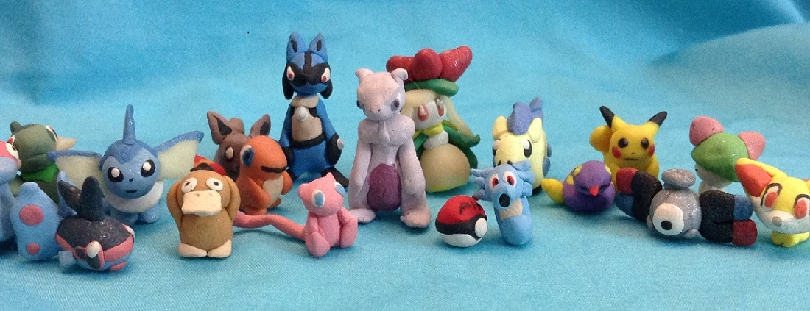
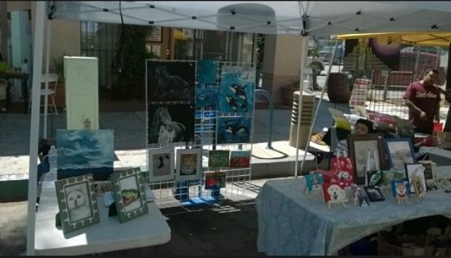

Al's Clayfigs
Welcome
Thanks for visiting my website for my clay creations. All my clay mini sculptures are handmade with polymer clay by me "Al". Each little sculpture is unique in its own way and are for everyone to enjoy. My subjects of choice are animals and nintendo game characters. So if you like animals or nintendo characters, you'll like my sculptures. Make sure you check out my instagram for my latest creations. If you are interested in commissioning a piece please go to "commissions" to contact me.
Events
You can visit my art booth in person at the Longbeach Artwalk. I set up my booth along with my sister's art. The Longbeach artwalk takes place every second Saturday of each month from (4:00pm to 10:00pm) at this location, 117 Linden ave. Long Beach, CA.